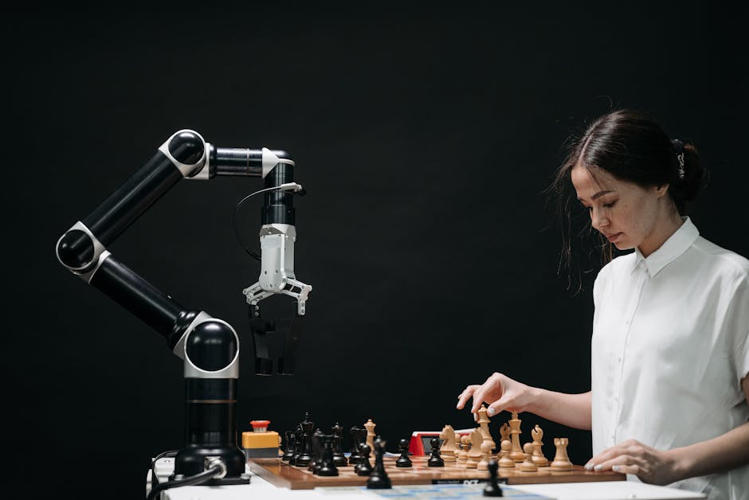

Imagine a robot that can not only move around but also "see" and understand the world just like you do. It can spot a ball, recognize a friend's face, or even read a label. This isn't science fiction anymore! It's the incredible power of Computer Vision, a technology that's revolutionizing how robots interact with their environment. At MakerWorks, we believe in empowering young minds to build the future, and understanding computer vision is a giant leap towards creating truly intelligent robots.
What Exactly is Computer Vision?
Think about how you see. Your eyes capture light, send signals to your brain, and your brain processes those signals to understand shapes, colors, distances, and movements. Computer Vision is essentially giving this ability to machines. It's a field of Artificial Intelligence (AI) that teaches computers to "see" and interpret digital images and videos, just like humans do with their eyes and brains.
But it's more than just taking pictures. Computer vision allows robots to:
- Identify Objects: Is that a chair, a table, or a pet?
- Recognize Faces: Who is this person?
- Detect Movement: Is something moving towards me or away from me?
- Understand Scenes: Is this a kitchen, a park, or a road?
- Measure Distances: How far away is that obstacle?
Without computer vision, a robot would be like a person walking around blindfolded, relying only on touch or pre-programmed paths. With it, robots gain a whole new level of awareness and intelligence.
Why is Computer Vision Crucial for Robotics?
In the world of robotics, vision is not just a luxury; it's often a necessity. For a robot to perform complex tasks autonomously, it needs to perceive and understand its surroundings. Here's why it's so important:
- Navigation and Obstacle Avoidance: Autonomous cars, drones, and delivery robots use computer vision to "see" roads, traffic signs, pedestrians, and unexpected obstacles, allowing them to navigate safely.
- Interaction with Humans and Objects: Service robots need to recognize people, understand gestures, and manipulate objects precisely. Imagine a robot helper in your home that can fetch specific items for you!
- Quality Control and Inspection: In factories, robots with vision systems can inspect products for defects faster and more accurately than human eyes, ensuring high quality.
- Mapping and Localization: Robots use vision to build maps of their environment and determine their own position within those maps, which is vital for exploration and task execution.
- Advanced Automation: From picking and placing items in warehouses to performing delicate surgeries, computer vision enables robots to handle intricate tasks with precision.
"Computer vision is the 'eyes' of a robot, transforming raw visual data into meaningful information, enabling intelligent decision-making and interaction with the physical world."
How Do Robots "See" and Process Information?
Cameras: The Robot's Eyes
Just like our eyes, robots use cameras to capture visual information. These can be standard 2D cameras, depth cameras (like those found in some gaming consoles that sense 3D space), or even thermal cameras. The camera captures an image, which is essentially a grid of tiny dots called pixels.
Pixels and Image Processing
Each pixel holds color information (often represented by Red, Green, and Blue values). A computer vision system then takes this raw pixel data and processes it using various algorithms. This processing can involve:
- Grayscale Conversion: Simplifying color images to shades of black and white, which can make some processing tasks easier.
- Edge Detection: Finding the boundaries of objects by identifying sudden changes in pixel intensity. This helps the robot understand shapes.
- Color Filtering: Isolating specific colors to find objects of a particular hue (e.g., finding a red ball).
- Feature Extraction: Identifying unique patterns or "features" within an image that help distinguish one object from another.
Object Detection and Recognition
Once the image is processed, the next step is often object detection – drawing a box around an object and identifying what it is (e.g., "This is a car," "This is a person"). Image recognition goes a step further, identifying specific instances, like "This is John Doe" or "This is a specific model of car." Modern systems often use powerful Machine Learning and Deep Learning models (like Convolutional Neural Networks or CNNs) that are trained on vast datasets of images to achieve incredible accuracy.
Getting Hands-On with OpenCV
If you're excited to dive into computer vision, one of the most popular and powerful tools you'll encounter is OpenCV (Open Source Computer Vision Library). It's a free, open-source library with thousands of optimized algorithms for various computer vision tasks. It's widely used in academia, research, and industry, and it's a fantastic starting point for students and enthusiasts!
OpenCV works with several programming languages, but Python is often recommended for beginners due to its simplicity and extensive community support. Let's look at a super simple example of how you can use OpenCV to load and display an image:
import cv2 # Import the OpenCV library
# Define the path to your image file
# Make sure you have an image named 'robot.jpg' in the same folder as your Python script,
# or provide the full path like 'C:/Users/YourName/Pictures/robot.jpg'
image_path = "robot.jpg"
# Load the image from the specified path
# cv2.imread() reads an image into a NumPy array (a special type of list for numbers)
img = cv2.imread(image_path)
# Check if the image was loaded successfully
# If the path is wrong or the file doesn't exist, img will be None
if img is None:
print(f"Error: Could not load image from {image_path}. Please check the path and file name.")
else:
# Display the image in a window
# The first argument is the window title, the second is the image data
cv2.imshow("Our Robot's First Glimpse!", img)
# Wait indefinitely until a key is pressed
# 0 means wait forever, any other number means wait for that many milliseconds
cv2.waitKey(0)
# Destroy all the windows created by OpenCV
cv2.destroyAllWindows()
This simple code snippet is your first step into the world of computer vision! You're telling the computer to open an image file, show it on your screen, and then close it when you're done. From here, you can start exploring more advanced functions like converting to grayscale, detecting edges, or even finding faces!
The Future is Bright: Real-World Applications
Computer vision is not just for fancy lab experiments; it's already integrated into many aspects of our daily lives and is shaping the future of robotics:
- Autonomous Vehicles: Self-driving cars rely heavily on computer vision to understand traffic, pedestrians, lanes, and road signs.
- Drones: Drones use vision for navigation, object tracking (e.g., following a person), and inspecting infrastructure.
- Smart Surveillance: Security cameras can use AI vision to detect unusual activities or identify known individuals.
- Healthcare: Robots assist in surgeries using vision for precision, and AI helps doctors analyze medical images for diagnoses.
- Agriculture: Robots with vision can identify ripe fruits, detect plant diseases, and automate harvesting.
- Augmented Reality (AR): Your phone uses computer vision to overlay digital information onto the real world, like in games or navigation apps.
Embark on Your Computer Vision Journey with MakerWorks!
The field of computer vision for robotics is incredibly exciting and offers endless possibilities for innovation. As you can see, it's not just about complex theories; it's about building practical solutions that make robots smarter and more capable.
Are you ready to give your robots the power of sight? At MakerWorks, we provide the perfect platform for young innovators like you to explore these cutting-edge technologies. Our workshops and courses delve into programming, robotics, and, yes, computer vision, helping you turn your ideas into reality. Imagine building a robot that can play fetch, sort objects, or even recognize your smile!
Join the MakerWorks community today and start building the future, one intelligent robot at a time!